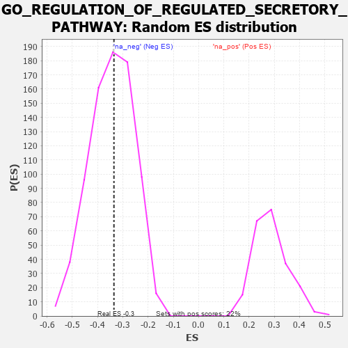

| | | Dataset | 7d |
| Phenotype | NoPhenotypeAvailable |
| Upregulated in class | na_neg |
| GeneSet | GO_REGULATION_OF_REGULATED_SECRETORY_PATHWAY |
| Enrichment Score (ES) | -0.33509094 |
| Normalized Enrichment Score (NES) | -0.9751886 |
| Nominal p-value | 0.50832266 |
| FDR q-value | 0.9006749 |
| FWER p-Value | 1.0 |
Table: GSEA Results Summary
 Fig 1: Enrichment plot: GO_REGULATION_OF_REGULATED_SECRETORY_PATHWAY
Fig 1: Enrichment plot: GO_REGULATION_OF_REGULATED_SECRETORY_PATHWAY
Profile of the Running ES Score & Positions of GeneSet Members on the Rank Ordered List
| PROBE | GENE SYMBOL | GENE_TITLE | RANK IN GENE LIST | RANK METRIC SCORE | RUNNING ES | CORE ENRICHMENT | | 1 | SYT2 | | | 8 | 5.577 | 0.1682 | No |
| 2 | RAC2 | | | 60 | 2.442 | 0.2359 | No |
| 3 | FOXF1 | | | 176 | 1.136 | 0.2559 | No |
| 4 | P2RY1 | | | 1416 | 0.407 | 0.1119 | No |
| 5 | BACE1 | | | 1673 | 0.360 | 0.0905 | No |
| 6 | ABR | | | 1812 | 0.335 | 0.0833 | No |
| 7 | FMR1 | | | 1816 | 0.334 | 0.0930 | No |
| 8 | SYK | | | 2186 | 0.278 | 0.0549 | No |
| 9 | REST | | | 2308 | 0.259 | 0.0475 | No |
| 10 | FER | | | 2803 | 0.183 | -0.0093 | No |
| 11 | SYT8 | | | 3115 | 0.135 | -0.0445 | No |
| 12 | AP1G1 | | | 3210 | 0.121 | -0.0527 | No |
| 13 | CDK5 | | | 3480 | 0.080 | -0.0842 | No |
| 14 | FES | | | 3501 | 0.077 | -0.0843 | No |
| 15 | SYT11 | | | 3732 | 0.036 | -0.1123 | No |
| 16 | HTR1B | | | 3745 | 0.035 | -0.1127 | No |
| 17 | SYT12 | | | 4172 | -0.037 | -0.1653 | No |
| 18 | SYT17 | | | 4310 | -0.061 | -0.1808 | No |
| 19 | LRRK2 | | | 4467 | -0.087 | -0.1978 | No |
| 20 | SYT4 | | | 4590 | -0.116 | -0.2097 | No |
| 21 | RAP1B | | | 4706 | -0.140 | -0.2199 | No |
| 22 | VAMP8 | | | 4905 | -0.179 | -0.2395 | No |
| 23 | PDPK1 | | | 5043 | -0.207 | -0.2505 | No |
| 24 | DRD2 | | | 5088 | -0.221 | -0.2493 | No |
| 25 | DOC2B | | | 5113 | -0.229 | -0.2454 | No |
| 26 | RIMS2 | | | 5272 | -0.265 | -0.2573 | No |
| 27 | TRIM9 | | | 5526 | -0.327 | -0.2793 | No |
| 28 | DGKI | | | 5725 | -0.384 | -0.2926 | No |
| 29 | VAMP7 | | | 5777 | -0.399 | -0.2870 | No |
| 30 | LAMP1 | | | 5796 | -0.404 | -0.2770 | No |
| 31 | SNX4 | | | 5834 | -0.415 | -0.2691 | No |
| 32 | SYT9 | | | 5992 | -0.469 | -0.2746 | No |
| 33 | SYT15 | | | 6472 | -0.650 | -0.3154 | Yes |
| 34 | ARF1 | | | 6583 | -0.701 | -0.3080 | Yes |
| 35 | RAB5A | | | 6655 | -0.741 | -0.2944 | Yes |
| 36 | VPS18 | | | 6659 | -0.743 | -0.2723 | Yes |
| 37 | CPLX1 | | | 6684 | -0.753 | -0.2524 | Yes |
| 38 | GSK3B | | | 6719 | -0.768 | -0.2334 | Yes |
| 39 | GIPC1 | | | 6819 | -0.826 | -0.2208 | Yes |
| 40 | DNM1L | | | 6963 | -0.913 | -0.2112 | Yes |
| 41 | CCR2 | | | 7003 | -0.939 | -0.1876 | Yes |
| 42 | SYT1 | | | 7148 | -1.033 | -0.1744 | Yes |
| 43 | KCNB1 | | | 7444 | -1.327 | -0.1714 | Yes |
| 44 | TRPV6 | | | 7569 | -1.502 | -0.1415 | Yes |
| 45 | ADCY1 | | | 7695 | -1.752 | -0.1041 | Yes |
| 46 | GRIK5 | | | 7792 | -2.044 | -0.0542 | Yes |
| 47 | CALM3 | | | 7869 | -2.525 | 0.0129 | Yes |
Table: GSEA details [plain text format]

Fig 2: GO_REGULATION_OF_REGULATED_SECRETORY_PATHWAY: Random ES distribution
Gene set null distribution of ES for GO_REGULATION_OF_REGULATED_SECRETORY_PATHWAY